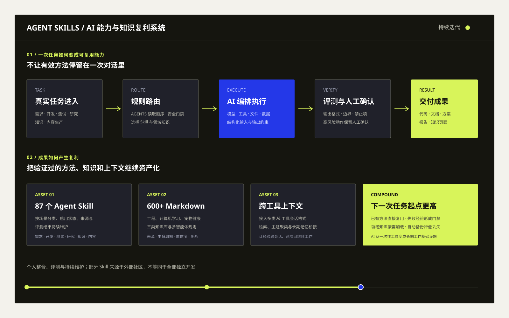

覆盖需求、开发、测试、写作、研究和知识管理等多类任务。
04 / 企业 AI 赋能与知识工程
让 AI 不是每次从零开始，
而是持续积累团队方法。
把真实任务中的有效方法沉淀为 Agent Skills，把领域知识整理成可追溯知识库，再通过规则、评测和人工确认控制 AI 行为，形成可持续迭代的个人 AI 工作基础设施。
核心成果
把“会用 AI”变成可复用的工作系统
不是收集提示词，而是持续维护一套能被选择、执行、验证、复用和备份的 AI 能力资产，让下一次任务拥有更高起点。
三类知识库分别服务工程交付、计算机学习和宠物健康。
Skill 场景治理、知识来源治理与跨工具会话上下文桥接。
真正浪费的不是一次回答，而是重复摸索同一个方法
企业内部使用 AI 时，常见问题不是没有模型，而是不同员工反复试提示词、反复犯相同错误，成功经验也停留在个人对话中，无法成为组织能力。
把任务方法、领域知识和质量门禁一起资产化
Skill 解决“应该怎样完成任务”，知识库解决“依据什么完成”，评测与规则解决“做到什么程度才算可靠”。三者组合，AI 才可能持续交付稳定结果。
一次任务如何转化为下一次任务的 AI 能力

这套系统的价值，在于让 AI 经验产生复利
01 / 可复用
Skill 把方法变成稳定执行单元
任务目标、输入输出、工具约束、禁止项与验收方式被写进可重复调用的 Skill，而不是依赖每次重新组织提示词。
02 / 可追溯
知识不只被保存，还能说明来源
记录来源、生命周期、置信度、更新时间和页面关系，使 AI 使用知识时可以复核，降低无法解释的回答风险。
03 / 可治理
场景、安全门禁和评测共同约束 AI
AGENTS 规则明确读取顺序、任务路由、写入规范和风险边界，让 AI 的行为在不同项目中保持一致。
04 / 可迁移
让上下文跨会话、跨工具继续流动
接入多类 AI 工具会话格式，支持检索、主题聚类和长期记忆桥接，减少重复解释与经验丢失。
从提示词技巧，升级为 Agent 工作方法
Context Engineering
按任务选择必要背景、知识、历史会话和工具约束，而不是把全部资料一次性堆进模型上下文。
Agent Skills
把复杂任务拆成可复用能力，明确输入、步骤、输出、失败恢复和人工确认位置。
Knowledge & Evaluation
用带来源的知识库支撑回答，再用测试、评测与质量门禁判断输出是否达到可交付标准。
与企业内部 AI 赋能的连接
这套方法可以直接转化为企业 AI 运营班和内部知识库。
把个人经验改成团队可用的 Skill，把部门知识改成受控知识库，把使用规范变成培训与 SOP，这正是企业内部 AI 产品经理推动组织采用的重要工作。
场景化培训
把复杂 AI 能力拆成具体业务任务的教学单元，让运营人员从真实工作开始使用 AI。
方法标准化
将有效方法沉淀为 Skill 模板和操作文档，降低不同员工之间的使用差异。
知识资产化
把运营规则、商品知识、案例和复盘变成可检索、可更新、可审核的团队知识。
质量可控
通过评测、来源和人工确认控制 AI 输出，避免组织过度依赖未经核验的模型答案。
成果边界
部分 Skill 来源于外部开源社区，成果重点是选型、整合、场景化应用、评测与持续维护；知识库规模与文件数来自当前仓库记录。